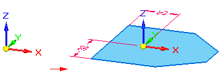

Coordinate System command (synchronous)
Coordinate System command (synchronous)
Creates a coordinate system in the synchronous environment. You can create or manipulate data relative to a coordinate system other than the base coordinate system. You can position the coordinate system relative to model geometry, another coordinate system, or in empty space.
A coordinate system can be used for constructing sketches. For example, you can draw 2D elements on the plane inferred by the XY axes of a coordinate system. You can also place dimensions and geometric relationships relative to the primary axes of the coordinate system.

When placing a coordinate system relative to a model face, you can use the shortcut keys to control the orientation of the coordinate system relative to linear edges on the face. For example, you can use the N key to choose another model edge to orient the coordinate system.

The valid shortcut keys are displayed in PromptBar while you are placing the coordinate system.